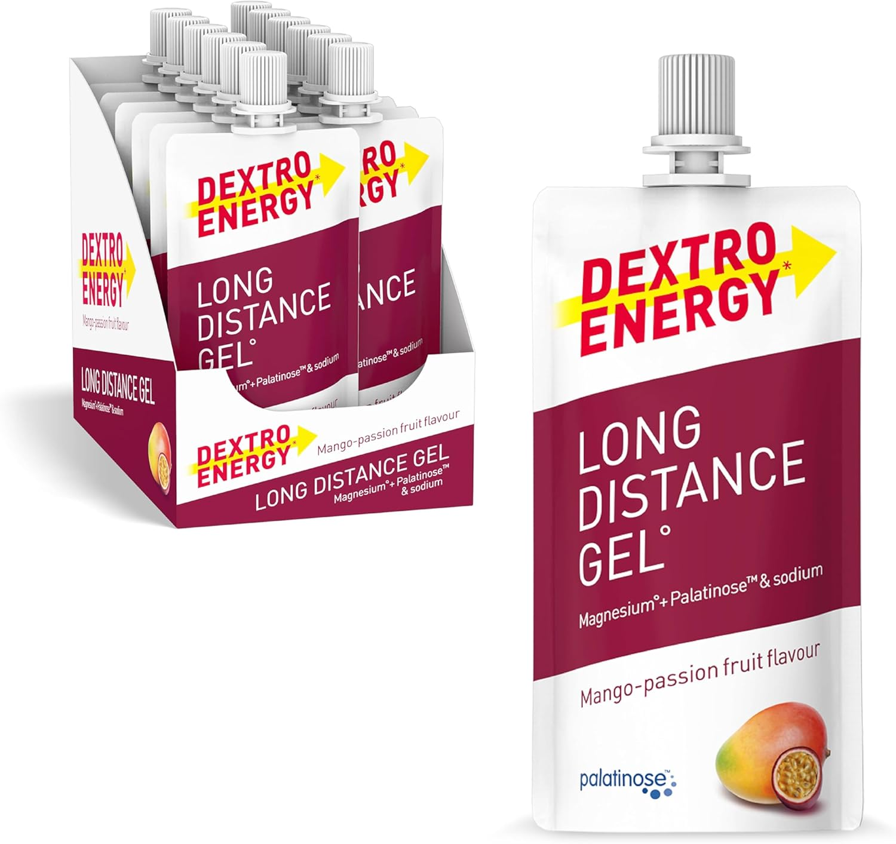
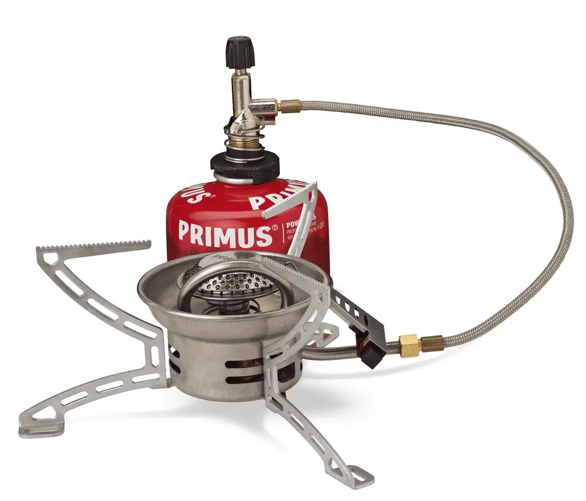
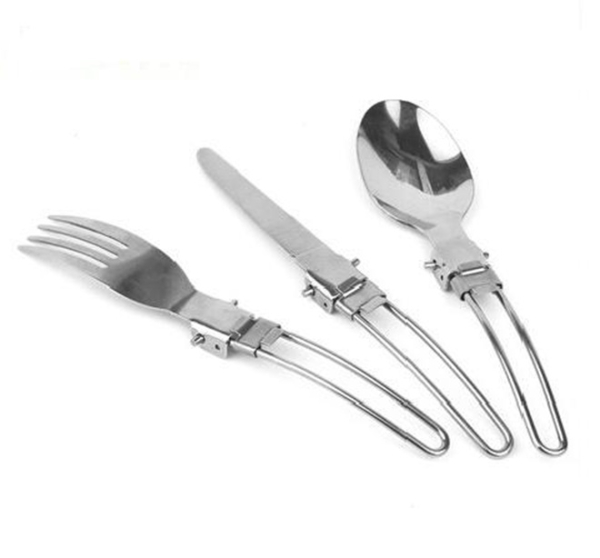
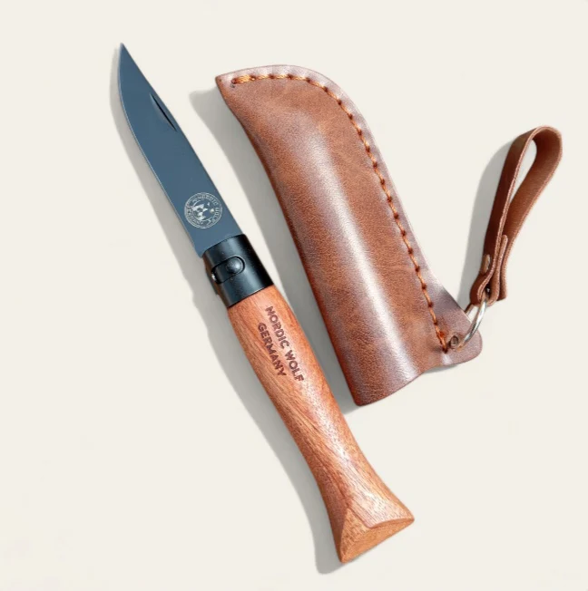
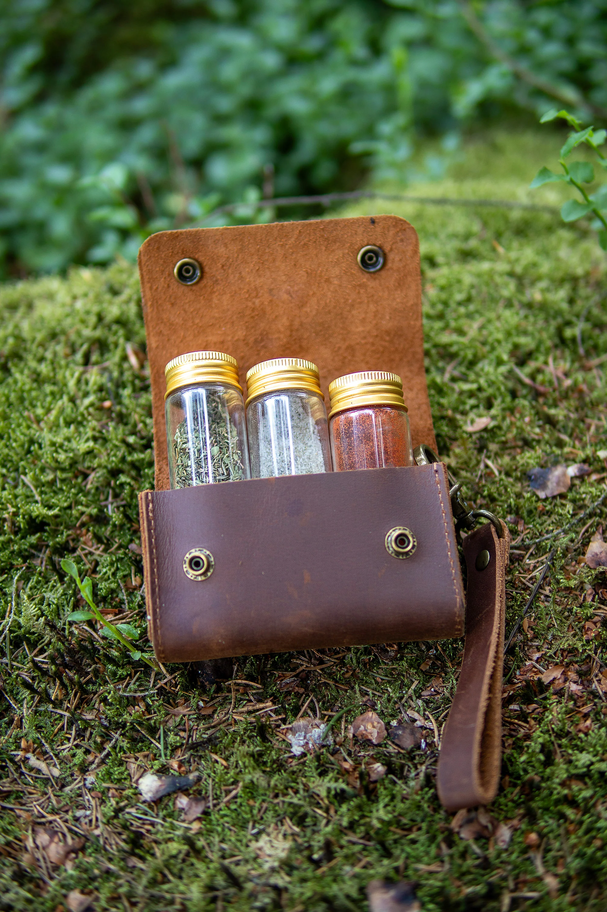
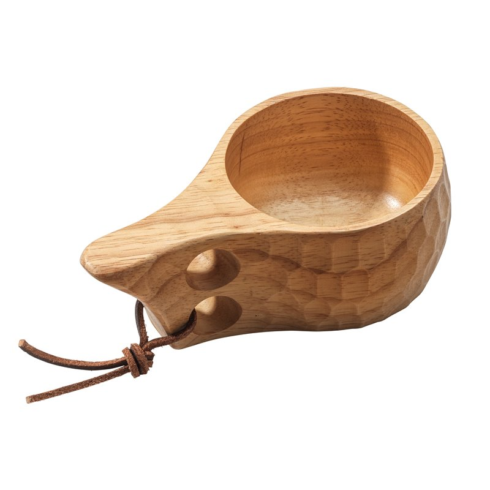

Essen
Trekkingnahrung aus einer kleinen Tüte; schmeckt noch etwas besser mit ein paar persönlichen Gewürzen. Auf langen Reisen sollte eine ausgewogene Mahlzeit von Vorteil sein. Bananen, Müsli und Nudeln machen es aber auch.
Nahrung
Elektrolyte
Long Distance Gel (Dextro Energie), Science in Sport HYDRO Tabletten oder ein bisschen Magnesium Pulver. Ich finde, ohne Elektrolyte geht nichts. Das Obrige soll, auf der Reise, durch Precision Fuel PF30 Energy Gels und SaltSticks ersetzt werden.
Zusatz
Filter
Das wichtigste auf der Tour. Katadyn BeFree 1 Liter, 2x 500ml Softflaschen von Arc'teryx und noch eine 1 Liter Softbottle Flasche von Platypus.
Wasser
Gaskocher
Um das flüssige zu erhitzen. Primus Gas + Easyfuel Piezo Gaskocher von der gleichen Marke. Bisher nur mit Gas gekocht.
Gas
Göffel
Bundeswehr Besteck als Geschenk erhalten. Lässt sich super klein zusammen klappen und verstauen.
Besteck
Topfpfannen
Outdoor Set von Bountless Voyage zum Kochen. Muss ehrlich gestehen, dass ich diese schmalen Töpfe nicht mag also habe ich mich für einen breiteren Topf entschieden.
Topf
Messer
Klappmesser mit Holzgriff von Nordic Wolf. Super Edelstahlt Klinge zum präparieren der gewünschten Mahlzeit.
Messer
Gewürztasche
Gewürztäschchen aus Leder mit 3 Glasfläschchen von Nordic Wolf. Für Gewürze.
Gewürze
Holztasse
Ein Holzbecher zum trinken aus Holz. Nordischer Stil.
Trinken